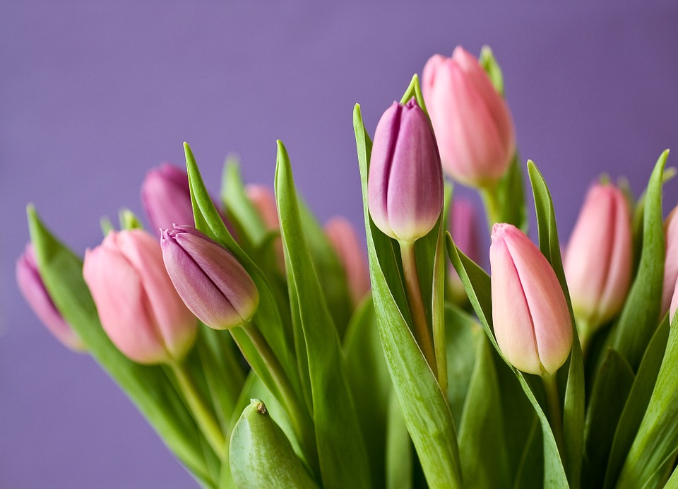

Planting Guide
Magnolia

Magnolia grandiflora, commonly known as the Southern magnolia or bull bay, is a tree
of the
family Magnoliaceae native to the southeastern United States, from coastal Virginia south to central Florida, and
west
to eastern Texas and Oklahoma. Reaching 27.5 m (90 ft) in height, it is a large striking evergreen tree with large
dark
green leaves and large white fragrant flowers. Widely cultivated around the world, over a hundred cultivars have
been
bred and marketed commercially. The timber is hard and heavy, and has been used commercially to make furniture,
pallets,
and veneer.
Ranunculus

Ranunculus asiaticus (Persian Buttercup) is a species of buttercup (Ranunculus) native to the
eastern Mediterranean
region in southwestern Asia, southeastern Europe (Crete, Karpathos and Rhodes), and northeastern Africa. It is a
herbaceous
perennial plant growing to 45 cm tall, with simple or branched stems. The basal leaves are three-lobed, with leaves
higher
on the stems more deeply divided; like the stems, they are downy or hairy. The flowers are 3-5 cm diameter, variably
red
to pink, yellow, or white, with one to several flowers on each stem.
Tulip

Tulipa gesneriana L. or "Didier's tulip" is a plant belonging to the family of Liliaceae. This
species has
uncertain origins, possibly from Asia, and has become naturalised in south-west Europe. Most of the cultivated
species,
subspecies and cultivars of tulip are derived from Tulipa gesneriana. The flower and bulb can cause dermatitis
through
the allergen, tuliposide A, even though the bulbs may be consumed with little ill-effect. The sweet-scented bisexual
flowers
appear during April and May. Bulbs are extremely resistant to frost, and can tolerate temperatures well below
freezing
- a period of low temperature is necessary to induce proper growth and flowering, triggered by an increase in
sensitivity
to the phytohormone auxin. The bulbs may be dried and pulverised and added to cereals or flour.